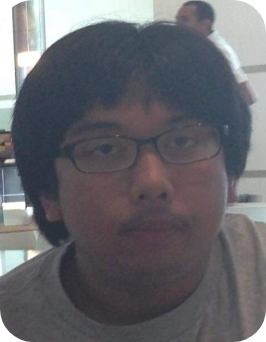

Board Certified by the American Board of Fryers (ABF)
Having fried since a young age, Dr. Raz received his (MF) Master Fryer degree in 2012 from El Camino College, and now specializes in Deep Fry Therapy. He enjoys browsing the forums while consuming high levels of GMO and soy. He lives in the Palos Verdes Peninsula with his 2 parents, brother, and cat, Snowball.

Assistant Fryer Dean
Having served as assistant to Dr. Raz for 6 years, Dean specializes in GIF Fry Therapy and is a Master of AP1 and AP2. He is currently working towards a degree in Nursing as well as a Fry Certificate from California State University, Fry (CSUF).
Lumbanya is a jack of all trades having recently published his first novel called Lavis, pumping out fire raps on his Youtube Channel, and practicing fry therapies on his friends. He is working towards his MF in Psychology from CSUDH. In his free time he enjoys shooting hoops with Assistant Fryer Dean.